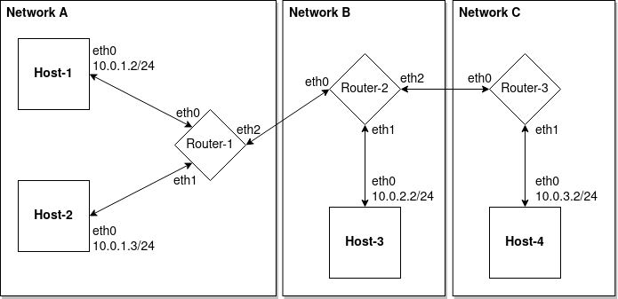

Wednesday December 28, 2022.
Back To Articles
In the last article we added some missing routing rules into each of our hosts on our virtual network so that traffic could flow between them. However, we also mentioned that if we try to send a packet to an ip address that does not exist in our network, that we get no response back. That's obvious, since there's no one to respond to us. But what actually happens to the packet we sent into the network? Where does it go? We're going to use some tools for analyzing network traffic to help us answer this question. But first, we're going to use those tools to see how packets normally flow through the network when all goes well.
But first, let's recall what our network topology looks like:
Often Wireshark is the go-to network traffic analyzer tool, but for our purposes it's not going to be as useful for us. Wireshark gives a nice user interface and displays packets in an easy-to-read format, which often makes it ideal to work with. But our problem is that we want to analyze traffic inside particular network namespaces. If you go ahead and launch wireshark, you'll notice it runs in your host namespace and you don't have visibility into your other network namespaces as a result.
As you can see, only my host namespace devices are listed. Well okay, but that's not really a problem, because we can can launch Wireshark from the commandline by typing wireshark, which means we can just run it from inside a particular namespace, say Host-1, by running: sudo ip netns exec Host-1 wireshark. Now we can see that wireshark is only able to see the eth0 device inside our Host-1 namespace:
So we can totally use Wireshark to do the packet analysis we want. Really, the only deterrant is that we are going to need to launch a Wireshark session for every device on our network, and then go in to each Wireshark session and start and finish a capture. If we only had one or two namespaces to monitor, this would be feasible. But for our setup, we have 12 devices that need to be monitored, and so we really want a tool that is more commandline-friendly instead, which means we have to sacrifice the nice interface Wireshark gives us.
For that, we can use the tcpdump tool. Spawning 12 instances of it and starting and stopping captures is going to be much easier, once we've got some scripts in place for doing so. Both tcpdump and Wireshark give us the same information, and in many ways feel very similar to one another. The biggest difference between the two is that Wireshark has a nice graphical interface to use, whereas tcpdump is a commandline utility. And don't let the name fool you - tcpdump can analyze all sorts of packets, not just TCP packets.
We're actually going to make another modification to our setup script again. This time, we are going to configure all of our network devices to be in promiscuous mode. Promiscuous mode allows us to capture any packets which arrive on a particular network device, even if they then get immediately dropped by that device right after. Without promiscuous mode, we can only see packets that don't get dropped. But we want to see everything that happens, so that we can be sure we aren't missing anything. So, we are going to add the following lines to the setup_network.sh script, immediately before we turn our devices up and make them useable:
echo 'Setting all devices to promiscuous mode...'
for host in $hosts; do
sudo ip netns exec "$host" ip link set eth0 promisc on
done
sudo ip netns exec Router-1 ip link set eth0 promisc on
sudo ip netns exec Router-1 ip link set eth1 promisc on
sudo ip netns exec Router-1 ip link set eth2 promisc on
sudo ip netns exec Router-2 ip link set eth0 promisc on
sudo ip netns exec Router-2 ip link set eth1 promisc on
sudo ip netns exec Router-2 ip link set eth2 promisc on
sudo ip netns exec Router-3 ip link set eth0 promisc on
sudo ip netns exec Router-3 ip link set eth1 promisc on
Alright, now we've got all our devices in promiscuous mode from the start. The next thing to do is to write a script that will launch 12 instances of tcpdump, one for each namespace, and monitor any packets being received or transmitted by each device. We're going to run each tcpdump process in the background. Once launched, tcpdump begins capturing packets immediately, so we don't have to worry about any other start-up logic. But tcpdump sessions are ended by running CTRL+C typically, meaning we'd need to send an interrupt or else send a SIGKILL to each process. That shouldn't be much of a problem, thankfully.
Let's first see what running tcpdump even looks like in the first place. We can run this command to start tcpdump inside the Host-1 namespace: sudo ip netns exec Host-1 tcpdump --interface eth0 -vv -n icmp. This is going to listen for any incoming or outgoing packets on the eth0 device, the output is going to be very verbose (-vv), and we are only going to listen for icmp packets (ICMP is the protocol that ping implements. Hence, we are listening for pings). We also specified -n so that tcpdump will output the ip addresses as numbers, because otherwise it will attempt to convert ip addresses to hostnames and we want to be explicit here and see the ip addresses directly.
I'm going to let that tcpdump session run on its own terminal, and then in another terminal I'm going to send a ping inside Host-1 just so we can see the output and understand what's going on. The ping command I'll run is sudo ip netns exec Host-1 ping 10.0.1.3 -c1. The -c1 means "count 1" - in other words, only send 1 ping packet out and then exit. The tcpdump terminal hasn't output anything yet. We can hit CTRL+C to exit tcpdump and it will then immediately print out the results of its packet capture. Here's the results:
$ sudo ip netns exec Host-1 tcpdump --interface eth0 -vv -n icmp
tcpdump: listening on eth0, link-type EN10MB (Ethernet), capture size 262144 bytes
^C14:45:57.084226 IP (tos 0x0, ttl 64, id 55377, offset 0, flags [DF], proto ICMP (1), length 84)
10.0.1.2 > 10.0.1.3: ICMP echo request, id 10544, seq 1, length 64
14:45:57.084263 IP (tos 0x0, ttl 64, id 30574, offset 0, flags [none], proto ICMP (1), length 84)
10.0.1.3 > 10.0.1.2: ICMP echo reply, id 10544, seq 1, length 64
2 packets captured
2 packets received by filter
0 packets dropped by kernel
At the bottom we can see 2 packets were captured. We can also see the start of the two packets on line 3 and 5 respectively. The captured packets begin with a timestamp, which tells us when the packet was captured. After the timestamp we see the protocol specified in the ethernet frame is IP, followed by a bunch of IP protocol fields. These fields are "tos" (type of service), which is not really used but can be used for advanced packet routing decisions. Then there is "ttl" (time to live), which specifies how long this packet should survive in the network before being destroyed. We will go into how that works later. The next interesting thing is the proto field, which lists the protocol encapsulated in the IP datagram. In this case, the protocol is ICMP. Then we see the length of the packet - 84 bytes. Below that line, the next line is indented and shows us the contents of the packet.
The contents of the first packet starts with 10.0.1.2 > 10.0.1.3, which indicates the source ip address is 10.0.1.2 and the destination is 10.0.1.3. Then we see this is an "ICMP echo request" packet, which is the packet the ping command transmits to request that its ping be answered. We see the packet below has been sent from 10.0.1.3 to 10.0.1.2 and is a "ICMP echo reply" packet. This is the response that the ping command is waiting for to consider the ping successful.
So now let's go ahead and create a simple script that's going to initiate tcpdump on our 12 devices in our network, as 12 separate background processes. I'll save this to a file named run_tcpdumps.sh:
#!/bin/bash
if [ $# -lt 1 ]; then
echo "USAGE: ./run_tcpdumps.sh [tcpdump args]" >&2
exit 1
fi
out="$(realpath "$1")"
if [ ! -d "$out" ]; then
echo "out-dir is not a directory: $out" >&2
exit 1
fi
sudo ip netns exec Host-1 tcpdump --interface eth0 ${@:2} &>"$out"/Host-1_eth0 &
echo $! > ~/.tcpdump_pids
sudo ip netns exec Host-2 tcpdump --interface eth0 ${@:2} &>"$out"/Host-2_eth0 &
echo $! >> ~/.tcpdump_pids
sudo ip netns exec Host-3 tcpdump --interface eth0 ${@:2} &>"$out"/Host-3_eth0 &
echo $! >> ~/.tcpdump_pids
sudo ip netns exec Host-4 tcpdump --interface eth0 ${@:2} &>"$out"/Host-4_eth0 &
echo $! >> ~/.tcpdump_pids
sudo ip netns exec Router-1 tcpdump --interface eth0 ${@:2} &>"$out"/Router-1_eth0 &
echo $! >> ~/.tcpdump_pids
sudo ip netns exec Router-1 tcpdump --interface eth1 ${@:2} &>"$out"/Router-1_eth1 &
echo $! >> ~/.tcpdump_pids
sudo ip netns exec Router-1 tcpdump --interface eth2 ${@:2} &>"$out"/Router-1_eth2 &
echo $! >> ~/.tcpdump_pids
sudo ip netns exec Router-2 tcpdump --interface eth0 ${@:2} &>"$out"/Router-2_eth0 &
echo $! >> ~/.tcpdump_pids
sudo ip netns exec Router-2 tcpdump --interface eth1 ${@:2} &>"$out"/Router-2_eth1 &
echo $! >> ~/.tcpdump_pids
sudo ip netns exec Router-2 tcpdump --interface eth2 ${@:2} &>"$out"/Router-2_eth2 &
echo $! >> ~/.tcpdump_pids
sudo ip netns exec Router-3 tcpdump --interface eth0 ${@:2} &>"$out"/Router-3_eth0 &
echo $! >> ~/.tcpdump_pids
sudo ip netns exec Router-3 tcpdump --interface eth1 ${@:2} &>"$out"/Router-3_eth1 &
echo $! >> ~/.tcpdump_pids
You'll notice that I'm just passing any arguments given to this script into tcpdump. This is just so that we can make this script flexible. You'll also notice that we are specifically monitoring all 12 devices in our network, even though some of these devices are in the same namespace as one another and we could just ask tcpdump to monitor all interfaces in that namespace. While that would reduce the number of tcpdump instances we'd need to run, it would create some ambiguity as to which interface transmitted or received which packet in that namespace. By monitoring specific devices, it will be clear which packet is arriving or being sent from which device.
Finally, here's the script we need to stop all our tcpdump processes:
#!/bin/bash
if [ -f ~/.tcpdump_pids ]; then
pids="$(cat ~/.tcpdump_pids)"
for pid in $pids; do
sudo kill -SIGINT $pid
done
rm ~/.tcpdump_pids
fi
Let's go ahead now and execute our mass tcpdump script. And then let's send a ping to 10.0.2.2 from inside Host-1. This will give us an idea of what a successful ping looks like. Here we go:
$ mkdir out
$ ./setup_network.sh
Creating namespaces...
Creating bridges...
Creating virtual ethernet cables...
Connecting virtual cables to bridges...
Assigning host ip addresses...
Turning all devices up...
Configuring routing rules...
$ ./run_tcpdumps.sh ./out/ icmp -vv -n
$ sudo ip netns exec Host-1 ping 10.0.2.2 -c1
PING 10.0.2.2 (10.0.2.2) 56(84) bytes of data.
64 bytes from 10.0.2.2: icmp_seq=1 ttl=64 time=0.267 ms
--- 10.0.2.2 ping statistics ---
1 packets transmitted, 1 received, 0% packet loss, time 0ms
rtt min/avg/max/mdev = 0.267/0.267/0.267/0.000 ms
$ ./stop_tcpdumps.sh
The only issue is that now we have 12 dump files to sift through to figure out what happened. Thankfully, this is a simple example and doesn't require much manual work to compile it all into a single file. I'm going to do that, just so we can have a single piece of output to look at. In front of the timestamp for each packet, I'll write the device name that the packet was captured on. Here's dump of the request packet moving through the network:
[Host-1][eth0] 19:07:54.253321 IP (tos 0x0, ttl 64, id 56040, offset 0, flags [DF], proto ICMP (1), length 84)
10.0.1.2 > 10.0.2.2: ICMP echo request, id 16604, seq 1, length 64
[Router-1][eth0] 19:07:54.253324 IP (tos 0x0, ttl 64, id 56040, offset 0, flags [DF], proto ICMP (1), length 84)
10.0.1.2 > 10.0.2.2: ICMP echo request, id 16604, seq 1, length 64
[Router-1][eth2] 19:07:54.253331 IP (tos 0x0, ttl 64, id 56040, offset 0, flags [DF], proto ICMP (1), length 84)
10.0.1.2 > 10.0.2.2: ICMP echo request, id 16604, seq 1, length 64
[Router-2][eth0] 19:07:54.253332 IP (tos 0x0, ttl 64, id 56040, offset 0, flags [DF], proto ICMP (1), length 84)
10.0.1.2 > 10.0.2.2: ICMP echo request, id 16604, seq 1, length 64
[Router-2][eth1] 19:07:54.253335 IP (tos 0x0, ttl 64, id 56040, offset 0, flags [DF], proto ICMP (1), length 84)
10.0.1.2 > 10.0.2.2: ICMP echo request, id 16604, seq 1, length 64
[Host-3][eth0] 19:07:54.253336 IP (tos 0x0, ttl 64, id 56040, offset 0, flags [DF], proto ICMP (1), length 84)
10.0.1.2 > 10.0.2.2: ICMP echo request, id 16604, seq 1, length 64
The ICMP echo request packet takes the expected route. It is transmitted on the Host-1 eth0 device, which is a veth pair whose peer is eth0 in Router-1, and so it immediately appears on Router-1's eth0. From there, the bridge device routes it to its eth2 device, which is a veth pair whose peer is eth0 in Router-2. The next bridge picks the packet up and routes it to Router-2's eth1 device. This eth1 device is a veth pair whose peer is eth0 in Host-3. And the eth0 device in Host-3 is the device whose ip address is 10.0.2.2, and so the request has arrived at its destination. The kernel will see that the ping request has arrived at an address whom it was destined for and then generate an ICMP echo reply packet, as the response, and transmit it back out on Host-3's eth0 device. The reply packet's route back to 10.0.1.2 is the same as the above but in reverse:
[Host-3][eth0] 19:07:54.253349 IP (tos 0x0, ttl 64, id 22327, offset 0, flags [none], proto ICMP (1), length 84)
10.0.2.2 > 10.0.1.2: ICMP echo reply, id 16604, seq 1, length 64
[Router-2][eth1] 19:07:54.253349 IP (tos 0x0, ttl 64, id 22327, offset 0, flags [none], proto ICMP (1), length 84)
10.0.2.2 > 10.0.1.2: ICMP echo reply, id 16604, seq 1, length 64
[Router-2][eth0] 19:07:54.253353 IP (tos 0x0, ttl 64, id 22327, offset 0, flags [none], proto ICMP (1), length 84)
10.0.2.2 > 10.0.1.2: ICMP echo reply, id 16604, seq 1, length 64
[Router-1][eth2] 19:07:54.253353 IP (tos 0x0, ttl 64, id 22327, offset 0, flags [none], proto ICMP (1), length 84)
10.0.2.2 > 10.0.1.2: ICMP echo reply, id 16604, seq 1, length 64
[Router-1][eth0]19:07:54.253356 IP (tos 0x0, ttl 64, id 22327, offset 0, flags [none], proto ICMP (1), length 84)
10.0.2.2 > 10.0.1.2: ICMP echo reply, id 16604, seq 1, length 64
[Host-1][eth0] 19:07:54.253356 IP (tos 0x0, ttl 64, id 22327, offset 0, flags [none], proto ICMP (1), length 84)
10.0.2.2 > 10.0.1.2: ICMP echo reply, id 16604, seq 1, length 64